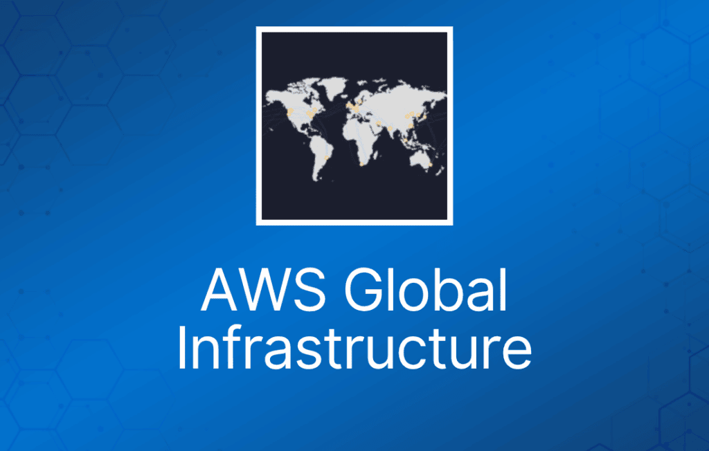
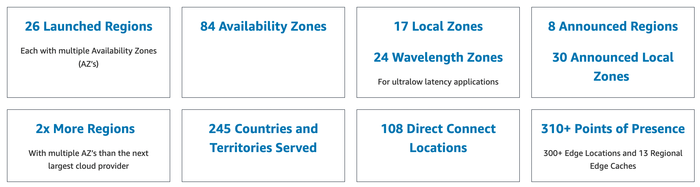
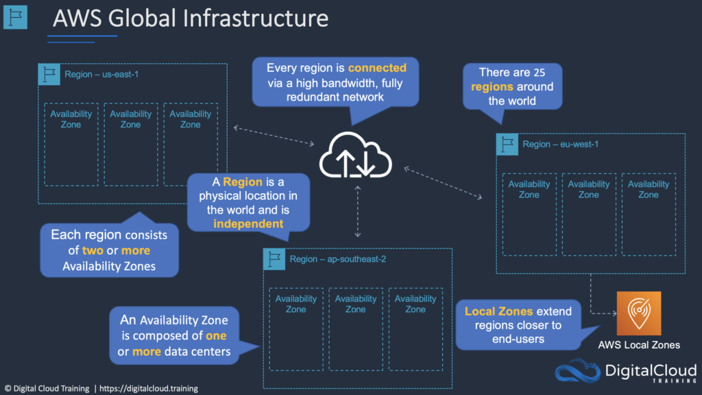
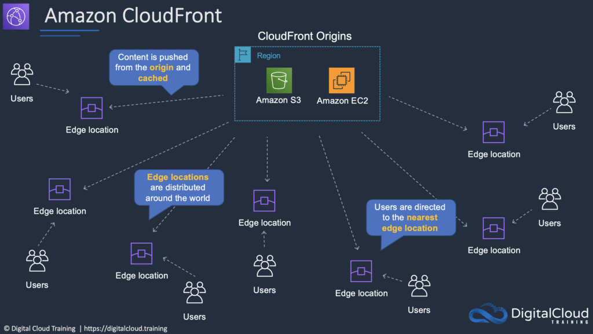

本文介绍 AWS 全球基础设施，这是 Cloud Practitioner 考试大纲中的关键技术领域。AWS 基础设施围绕 Region 和 Availability Zone（AZ）构建。
AWS Region 是 AWS 在全球的物理位置，每个 Region 包含多个 AZ。
AZ 由一个或多个独立的数据中心组成，每个数据中心都有冗余的电力、网络和连接，位于不同的设施中。
每个 region 完全独立。每个 Availability Zone 相互隔离，但同一 region 内的 Availability Zone 之间通过低延迟链路连接。
AWS 不断在全球扩展，目前包括：

Region（区域）
region 是一个地理区域。
每个 region 由 3 个或更多 availability zone 组成。
每个 Amazon Region 都设计为与其他 Amazon Region 完全隔离。
每个 AWS Region 有多个 Availability Zone 和数据中心。
你可以通过私有或公共 Internet 连接在 region 内部以及 region 之间复制数据。
你对数据物理所在的 region 保留完全的控制权和所有权，从而轻松满足区域合规和数据驻留要求。
注意，region 之间的数据传输是收费的。
启动 EC2 实例时，必须选择同一 region 中的 AMI。如果 AMI 在其他 region，可以将 AMI 复制到你使用的 region。
Region 与 Endpoint：
- 使用命令行界面或 API 操作实例时，必须指定其区域 endpoint。
- 为了降低应用的数据延迟，大多数 AWS 服务都提供区域 endpoint 来接收你的请求。
- endpoint 是作为 Web 服务入口的 URL。
- 例如，https://dynamodb.us-west-2.amazonaws.com 是 Amazon DynamoDB 服务的入口。
Availability Zone（可用区）
Availability Zone 之间在物理上相互分离和隔离。
AZ 跨一个或多个数据中心，彼此之间具有直接、低延迟、高吞吐量和冗余的网络连接。
每个 AZ 都设计为独立的故障域。
启动实例时，你可以选择一个 Availability Zone，或让 AWS 为你选择。
如果将 EC2 实例分布在多个 Availability Zone 中，当某个实例发生故障时，你可以设计应用让另一个 Availability Zone 中的实例处理请求。
你还可以使用 Elastic IP 地址掩盖某个 Availability Zone 中实例的故障，方法是将地址快速重新映射到另一个 Availability Zone 中的实例。
Availability Zone 由 region 代码后跟一个字母标识符表示，例如 us-east-1a。
为确保资源分布在一个 region 的各个 Availability Zone 中，AWS 会针对每个 AWS 账户独立地将 Availability Zone 映射到名称。
例如，你的 AWS 账户中的 Availability Zone us-east-1a 可能与另一个 AWS 账户的 us-east-1a 不是同一位置。
要跨账户协调 Availability Zone，必须使用 AZ ID——它是 Availability Zone 的唯一且一致的标识符。
AZ 在典型的都会区域内物理分离，并位于低风险洪泛平原。
AZ 使用独立的 UPS 和现场备用发电设施，并由来自独立设施的不同电网供电。
所有 AZ 都冗余连接到多个一级（tier-1）传输提供商。
下图展示了三个 AWS Region，每个 Region 都有三个 Availability Zone：

Local Zone
AWS Local Zone 将计算、存储、数据库和其他选定的 AWS 服务部署在离最终用户更近的位置。
借助 AWS Local Zone，你可以轻松运行需要个位数毫秒级延迟的高要求应用，服务最终用户。
每个 AWS Local Zone 位置都是某个 AWS Region 的扩展，你可以在其中使用 Amazon Elastic Compute Cloud、Amazon Virtual Private Cloud、Amazon Elastic Block Store、Amazon File Storage 和 Amazon Elastic Load Balancing 等 AWS 服务，在地理位置上靠近最终用户运行对延迟敏感的应用。
AWS Local Zone 在本地工作负载与 AWS Region 中运行的工作负载之间提供高带宽、安全的连接，使你能够通过相同的 API 和工具集无缝连接区域内的全部服务。
AWS Wavelength
AWS Wavelength 使开发者能够构建为移动设备和最终用户提供个位数毫秒级延迟的应用。
AWS 开发者可以将应用部署到 Wavelength Zone——这是将 AWS 计算和存储服务嵌入电信运营商数据中心内、位于 5G 网络边缘的 AWS 基础设施部署——并无缝访问该区域中丰富的 AWS 服务。
AWS Wavelength 将 AWS 服务带到 5G 网络边缘，最大限度地降低移动设备连接应用的延迟。
AWS Outposts
AWS Outposts 将原生 AWS 服务、基础设施和运营模式带到几乎任何数据中心、托管机房或本地设施。
你可以在本地和 AWS 云中使用相同的 AWS API、工具和基础设施，提供真正一致的混合体验。
AWS Outposts 专为联网环境设计，可用于支持因低延迟或本地数据处理需求而必须保留在本地的工作负载。
Edge Location 与 Regional Edge Cache
Edge location 是 CloudFront 的 Content Delivery Network（CDN）端点。
edge location 的数量远多于 region。
目前有超过 200 个 edge location。
Regional Edge Cache 位于你的 CloudFront 源服务器与 Edge Location 之间。
Regional Edge Cache 的缓存容量比每个单独的 Edge Location 更大。
下图展示了 CloudFront 的 Edge location：
